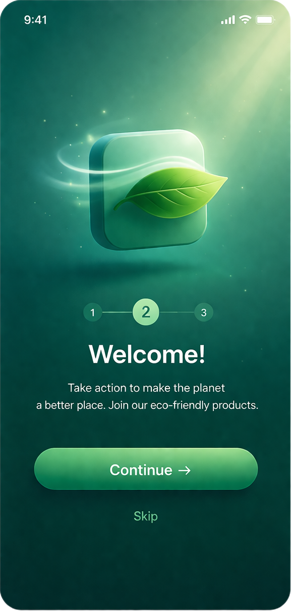
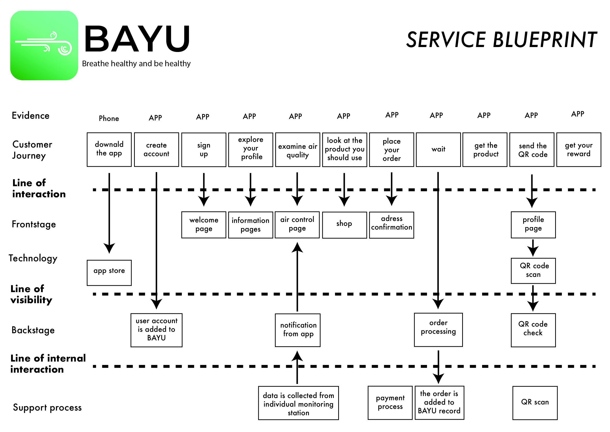
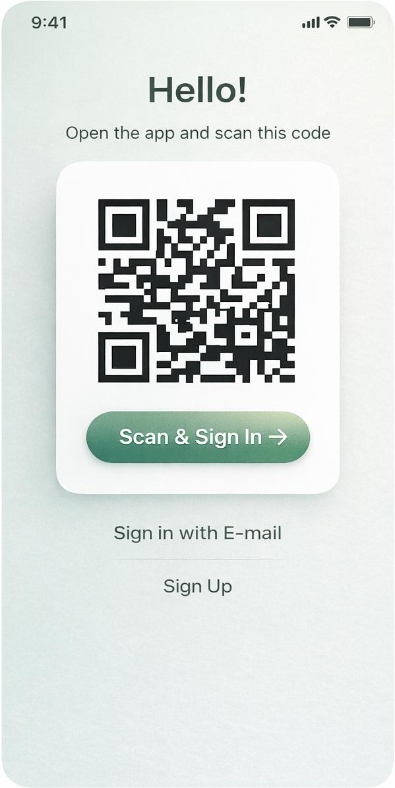

Problem
In Bangladesh, air pollution levels are critically high, especially in urban and industrial areas. Factory workers and individuals who spend long hours outdoors are constantly exposed to polluted air, which poses serious health risks — particularly for people with respiratory conditions such as asthma.
Despite this, many users lack awareness of real-time air quality conditions and guidance on how to protect themselves. Access to the right protective equipment, such as masks, is often inconsistent, and users may not know which solution is suitable for their specific health condition.

Solution
BAYU is a mobile application designed to support individuals living and working in polluted environments by providing real-time air quality insights and personalised guidance. The app monitors air pollution levels in the user’s location and sends notifications based on their health condition.
It recommends appropriate protective measures, such as specific types of masks, and helps users make informed decisions about their daily activities. Beyond recommendations, BAYU encourages consistent usage of protective equipment. By scanning purchased masks and tracking usage through periodic photo verification, the app ensures that users actively follow health guidance.

Outcomes
Through continuous monitoring, guidance, and behavioral tracking, BAYU helps users reduce their exposure to harmful air conditions and build healthier daily habits.
The system not only increases awareness but also supports long-term behavioral change, enabling users to take control of their respiratory health in environments where clean air is not always accessible.


Mask Usage Tracking
- The user scans the QR code on the mask after purchase to register it in the system.
- The app requires the user to periodically take a photo while wearing the mask as proof of use.
- The system tracks usage consistency over time.
- Reminders are provided to support regular usage.
- Users are encouraged through feedback and reward-based mechanisms.